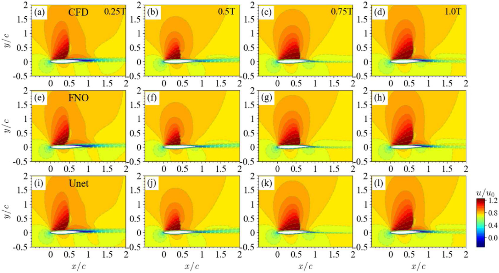
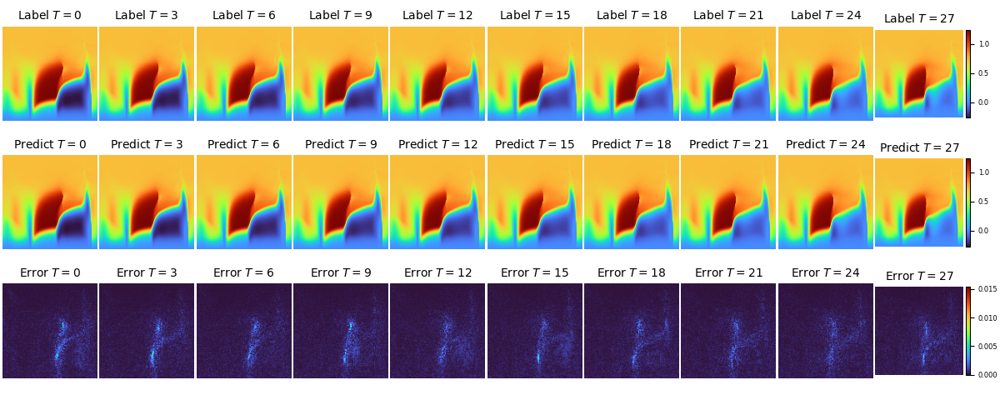

Multi-timestep Complicated Flow Field Prediction with Transonic Airfoil under Data Driven Mode(with Two Kinds of Backbones: FNO2D and UNET2D)


Introduction
High precision unsteady flow simulation is among the key topics in computational fluid dynamics(CFD), with a wide range of application scenarios and broad market value. However, traditional methods encountered problems such as long time-consumption, poor precision and hard convergence. AI methods provides a new perspective to explore the evolution mechanism of flow fields.
The current application provides an end-to-end solution for predicting unsteady and complex flow fields in a two-dimensional transonic airfoil scenario. Two network backbones, Fourier Neural Operator (FNO) and Unet, are constructed in order to stably predict the flow field for subsequent m time steps based on the input flow field of k time steps, while ensuring a certain level of accuracy.
The Mach number of the incoming flow reached Ma=0.73 in the current application. Thus it can verify the effectiveness of deep learning methods in predicting unsteady flow fields under multiple physical parameter changes in complex flow structures such as shock waves.

Problem Description
We aim to predict next k steps of two-dimensional compressible unsteady flow by learning from past m steps flow field in the current application:
Technology Path
The solution steps to the problem is presented as follows:
Training Dataset Construction.
Model Construction.
Optimizer and Loss Function.
Model Training.
Preparation
Before practice, ensure that MindSpore of suitable version has been correctly installed. If not, you can run the following command:
MindSpore installation page Install MindSpore.
2D Airfoil Unsteady Flow Field Prediction Implementation
The implementation of 2D airfoil unsteady flow field prediction consists of the following seven steps:
Configure network and training parameters
Datasets preparation
Model building
Loss function and optimizer
Train function
Model training
Result visualization
[1]:
import os
import time
import numpy as np
from mindspore import nn, Tensor, context, ops, jit, set_seed, data_sink, save_checkpoint
from mindspore import dtype as mstype
from mindflow.common import get_warmup_cosine_annealing_lr
from mindflow.loss import RelativeRMSELoss
from mindflow.utils import load_yaml_config, print_log
from src import Trainer, init_dataset, init_model, plt_log, check_file_path, count_params
[2]:
set_seed(0)
np.random.seed(0)
[3]:
context.set_context(mode=context.GRAPH_MODE,
save_graphs=False,
device_target="Ascend",
device_id=0)
use_ascend = context.get_context("device_target") == "Ascend"
Configure Network and Training Parameters
Load four types of parameters from the configuration file, which are model-related parameters (model), data-related parameters (data), optimizer-related parameters (optimizer) and callback-related parameters(callback).
[4]:
config = load_yaml_config("./config/2D_unsteady.yaml")
data_params = config["data"]
model_params = config["model"]
optimizer_params = config["optimizer"]
summary_params = config["summary"]
Datasets Preparation
Dataset download link: data_driven/airfoil/2D_unsteady
The data is numpy npz file with a dimension(t, H, W, C) of (9997, 128, 128, 3), where t is the total time steps, H and W are flow field resolution, C is the channel number(3 channels are velocity U, V and pressure P, respectively).
[5]:
train_dataset, test_dataset, means, stds = init_dataset(data_params)
input size (3560, 8, 128, 128, 3)
label size (3560, 32, 128, 128, 3)
train_batch_size : 8
train dataset size: 2967
test dataset size: 593
train batch dataset size: 370
test batch dataset size: 74
Model Building
The model is built by calling initial_model() function. Before calling function, loss_scaler and compute_dtype should be customized according to the corresponding hardware.
[6]:
if use_ascend:
from mindspore.amp import DynamicLossScaler, all_finite, auto_mixed_precision
loss_scaler = DynamicLossScaler(1024, 2, 100)
compute_dtype = mstype.float16
model = init_model("fno2d", data_params, model_params, compute_dtype=compute_dtype)
auto_mixed_precision(model, optimizer_params["amp_level"]["fno2d"])
else:
context.set_context(enable_graph_kernel=True)
loss_scaler = None
compute_dtype = mstype.float32
model = init_model("fno2d", data_params, model_params, compute_dtype=compute_dtype)
compute_dtype_of_FNO Float16
Loss Function and optimizer
In the current application, RelativeRMSELoss and AdamWeightDecay are selected to be the loss function and optimizer, respectively. Meanwhile the warmup_cosine_annealing_lr strategy is selected as the learning rate scheduler. Users could also customize their own loss function and learning rate scheduler.
[7]:
loss_fn = RelativeRMSELoss()
summary_dir = os.path.join(summary_params["summary_dir"], "Exp01", "fno2d")
ckpt_dir = os.path.join(summary_dir, "ckpt_dir")
check_file_path(ckpt_dir)
check_file_path(os.path.join(ckpt_dir, 'img'))
print_log('model parameter count:', count_params(model.trainable_params()))
print_log(
f'learing rate: {optimizer_params["lr"]["fno2d"]}, T_in: {data_params["T_in"]}, T_out: {data_params["T_out"]}')
steps_per_epoch = train_dataset.get_dataset_size()
lr = get_warmup_cosine_annealing_lr(optimizer_params["lr"]["fno2d"], steps_per_epoch,
optimizer_params["epochs"], optimizer_params["warm_up_epochs"])
optimizer = nn.AdamWeightDecay(model.trainable_params(),
learning_rate=Tensor(lr),
weight_decay=optimizer_params["weight_decay"])
model parameter count: 9464259
learing rate: 0.001, T_in: 8, T_out: 32
Train Function
With MindSpore>= 2.0.0, users could train neural networks using functional programming paradigms, and single-step training functions are decorated with jit. The data_sink function is used to transfer the step-by-step training function and training dataset.
[8]:
trainer = Trainer(model, data_params, loss_fn, means, stds)
def forward_fn(inputs, labels):
loss, _, _, _ = trainer.get_loss(inputs, labels)
if use_ascend:
loss = loss_scaler.scale(loss)
return loss
grad_fn = ops.value_and_grad(forward_fn, None, optimizer.parameters, has_aux=False)
@jit
def train_step(inputs, labels):
loss, grads = grad_fn(inputs, labels)
if use_ascend:
loss = loss_scaler.unscale(loss)
if all_finite(grads):
grads = loss_scaler.unscale(grads)
loss_new = ops.depend(loss, optimizer(grads))
return loss_new
def test_step(inputs, labels):
return trainer.get_loss(inputs, labels)
train_size = train_dataset.get_dataset_size()
test_size = test_dataset.get_dataset_size()
train_sink = data_sink(train_step, train_dataset, sink_size=1)
test_sink = data_sink(test_step, test_dataset, sink_size=1)
test_interval = summary_params["test_interval"]
save_ckpt_interval = summary_params["save_ckpt_interval"]
Model Training
Inference is performed during model training. Users could directly load the test data set, output the inference precision and save visualization results on the test set every test_interval epochs. Simultaneously, users could save checkpoint file every save_checkpoint_interval steps.
[9]:
for epoch in range(1, optimizer_params["epochs"] + 1):
time_beg = time.time()
train_l2_step = 0.0
model.set_train()
for step in range(1, train_size + 1):
loss = train_sink()
train_l2_step += loss.asnumpy()
train_l2_step = train_l2_step / train_size / data_params["T_out"]
print_log(
f"epoch: {epoch}, step time: {(time.time() - time_beg) / steps_per_epoch:>7f}, loss: {train_l2_step:>7f}")
if epoch % test_interval == 0:
model.set_train(False)
test_l2_by_step = [0.0 for _ in range(data_params["T_out"])]
print_log("---------------------------start test-------------------------")
for step in range(test_size):
_, pred, truth, step_losses = test_sink()
for i in range(data_params["T_out"]):
test_l2_by_step[i] += step_losses[i].asnumpy()
test_l2_by_step = [error / test_size for error in test_l2_by_step]
test_l2_step = np.mean(test_l2_by_step)
print_log(f' test epoch: {epoch}, loss: {test_l2_step}')
print_log("---------------------------end test---------------------------")
plt_log(predicts=pred.asnumpy(),
labels=truth.asnumpy(),
img_dir=os.path.join(ckpt_dir, 'img'),
epoch=epoch
)
if epoch % save_ckpt_interval == 0:
save_checkpoint(model, ckpt_file_name=os.path.join(ckpt_dir, 'airfoil2D_unsteady.ckpt'))
epoch: 1, step time: 2.652332, loss: 0.733017
epoch: 2, step time: 0.688175, loss: 0.203251
epoch: 3, step time: 0.686817, loss: 0.128816
epoch: 4, step time: 0.685909, loss: 0.109786
epoch: 5, step time: 0.688545, loss: 0.093725
epoch: 6, step time: 0.685986, loss: 0.076027
epoch: 7, step time: 0.686459, loss: 0.069847
epoch: 8, step time: 0.688228, loss: 0.058694
epoch: 9, step time: 0.688053, loss: 0.060886
epoch: 10, step time: 0.692221, loss: 0.065305
---------------------------start test-------------------------
test epoch: 10, loss: 0.03798117920381923
---------------------------end test---------------------------
...
epoch: 191, step time: 0.693253, loss: 0.007012
epoch: 192, step time: 0.691330, loss: 0.007043
epoch: 193, step time: 0.692804, loss: 0.006986
epoch: 194, step time: 0.690053, loss: 0.006973
epoch: 195, step time: 0.692159, loss: 0.006967
epoch: 196, step time: 0.690170, loss: 0.006944
epoch: 197, step time: 0.690344, loss: 0.006930
epoch: 198, step time: 0.690674, loss: 0.006911
epoch: 199, step time: 0.690877, loss: 0.006904
epoch: 200, step time: 0.689170, loss: 0.006892
---------------------------start test-------------------------
test epoch: 200, loss: 0.005457837492891436
---------------------------end test---------------------------
Result visualization
The label value, prediction value and error of pressure P distribution in the flow field of different time steps under UNET2D backbone：

The label value, prediction value and error of velocity U distribution in the flow field of different time steps under UNET2D backbone：

The label value, prediction value and error of velocity V distribution in the flow field of different time steps under UNET2D backbone：

The label value, prediction value and error of pressure P distribution in the flow field of different time steps under FNO2D backbone：

The label value, prediction value and error of velocity U distribution in the flow field of different time steps under FNO2D backbone：

The label value, prediction value and error of velocity V distribution in the flow field of different time steps under FNO2D backbone：